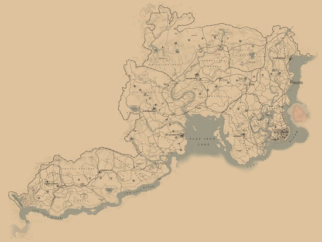
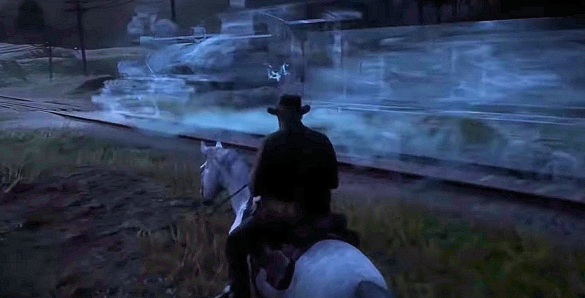
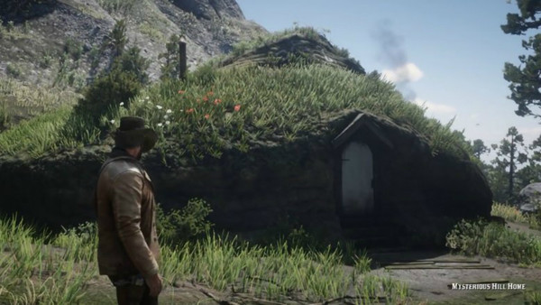
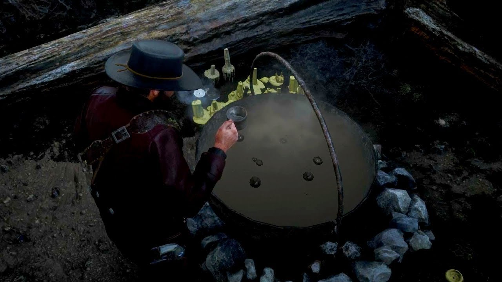
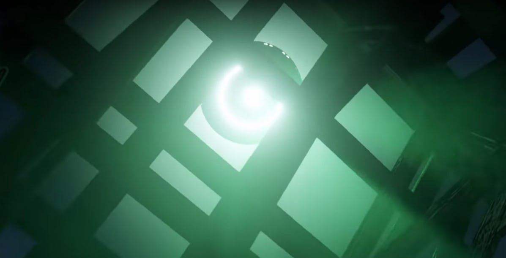

Easter Eggs

With such a sprawling world to explore, Rockstar have managed to sneak in refrences to other forms of media such as myths, literature and film. Here are a few we have managed to find in our travels across the West:
Images Sourced From:
1. 123MovieNews.com
2. SVG.com
3. Youtube.com
4. ScreenRant.com
5. ScreenRant.com

1. Ghost Train
North-West of Lemoyne state, just between the Lemoyne and New Hanover border, lies a train track crossing. At around 3a.m. in this area, a ghost train will spawn on the train racks nearby. You'll know it's close when your horse starts to whine.

2. Goldilocks' House
Beside Donner Falls, towards East, in the state of Ambarino, is an oddly shaped house on a mountain. People speculate this house to be a 'Hobbit Home' from 'The Lord of the Rings' series or the bears' house in the children's story, 'Goldilocks and the Three Bears'. There is more evidence for the latter, due to a bear being present by the house, which does not attack you.

3. Witch's Cauldron
Slightly further East from Donner Falls, you can stumble upon a small shack with a shrine and cauldron present inside. If you choose to drink from the cauldron, it will result in you blacking out and waking up outside the shack, with all your cores refilled.

4. UFO
In New Hanover state, north-east of Heartland Overflow, there is a run-down cabin present beside a tiny lake. In it, there are dead bodies lying in beds, with one situated at a desk with a note beside it. If you read the note and return to the cabin at the time outlined on the note, a UFO will appear above the cabin.

5. Ghost
In the bayou swamp of Lemoyne, a ghost will appear at night between 9p.m. and 3a.m., when the weather is foggy. Her name is Agnes Dowd, and you will get to know her if you keep visting her, as she has conversations with you. But she will only appear a total of 16 times, and will never appear again.